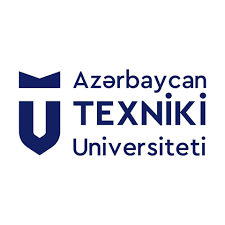
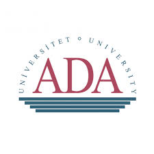

Tərcümeyi-hal
Zaid Rustamov
Süni intellekt mühəndisi və tədqiqatçı — hüquqi AI, retrieval sistemləri, az-resurslu NLP.
MegaSec AI Laboratoriyasında Süni İntellekt mühəndisi və ADA Universitetinin nəzdində olan Data Analitikası və Tədqiqat Mərkəzində tədqiqatçı. Production səviyyəli retrieval-augmented sistemlər dizayn edirəm və onların real mühitdə etibarlı işləməsini təmin edən metodları araşdırıram.
İş təcrübəsi
Süni intellekt mühəndisi — MegaSec AI Laboratoriyası
Hazırda · Bakı
Hüquqi və ictimai sahələr üçün production AI sistemlərinin dizaynı və tətbiqi. E-Huquq-da (Azərbaycan qanunvericiliyi üzrə hüquqi RAG) baş mühəndis, E-Polis və Metro Bot-a töhfə. Məsuliyyət sahəsi: retrieval arxitekturası, qiymətləndirmə sistemi və LLM serving stack.
Tədqiqatçı — ADA Universiteti, Data Analitikası və Tədqiqat Mərkəzi
Hazırda · Bakı
Retrieval-augmented generation, reranking strategiyaları və Azərbaycan dili üçün az-resurslu NLP üzrə tədqiqat. AICT və ICMSO-da resenziyalı işlərin müəllifi və həmmüəllifi.
Təhsil

Magistratura, Data Analitikası — Azərbaycan Texniki Universiteti
2025 – 2027 · davam edir

Bakalavr, Kompüter elmləri — ADA Universiteti
2019 – 2025
Seçilmiş nəşrlər
Enhancing Retrieval and Re-ranking in RAG: A Case Study on Tax Law of Azerbaijan
AICT 2025 (IEEE)
Z. Rustamov, M. Gasimzade, S. Rustamov.
Contextualized Word Embeddings in Azerbaijani Language
AICT 2024 (IEEE) · 4 sitat
T. Alizada, U. Suleymanov, Z. Rustamov.
Integrating Attention Mechanisms with LSTM for Azerbaijani Spelling Correction
ICMSO 2024 (Springer), səh. 534–547
Z. Rustamov, E. Mammadli, I. Hasanli, H. Ismayilzada, S. Rustamov.
Analysis of Public Sentiment in Azerbaijani News and Social Media
ICCML 2024 (ACM) · 4 sitat
N. Guliyev, Z. Rustamov, S. Rustamov.
Texniki bacarıqlar
- LLM-lər: GPT, Qwen, Gemma; QLoRA / PEFT fine-tuning
- Retrieval: BGE-M3, Milvus, dense + sparse hibrid axtarış, RRF, LLM reranking
- Backend: Python, FastAPI, async I/O, REST API-lar
- İnfra: Docker, Linux, GPU iş yükləri, CI/CD
Tədqiqat sahələri
- Production miqyasında Retrieval-Augmented Generation (RAG)
- Çox-agent AI sistemləri və orkestrasiya
- Hüquqi AI və əsaslandırılmış cavab generasiyası
- Azərbaycan dili üçün az-resurslu NLP